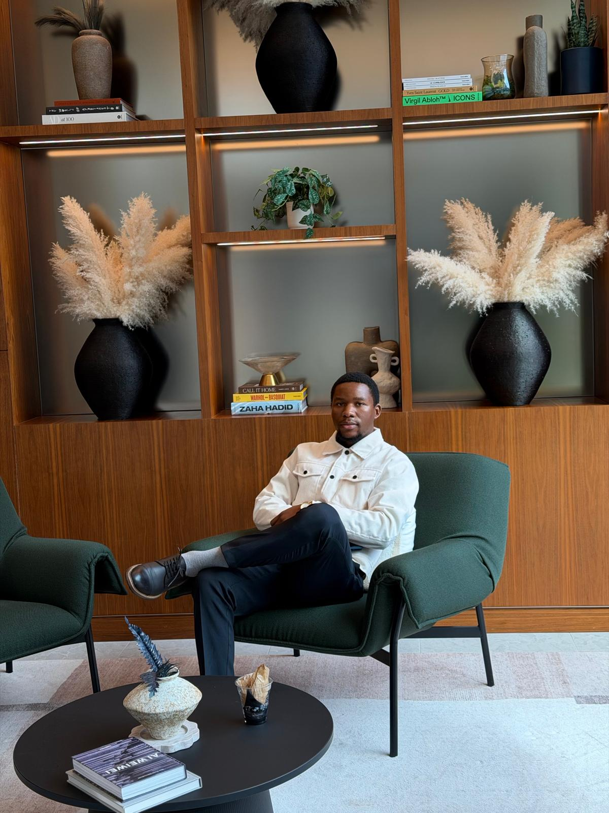
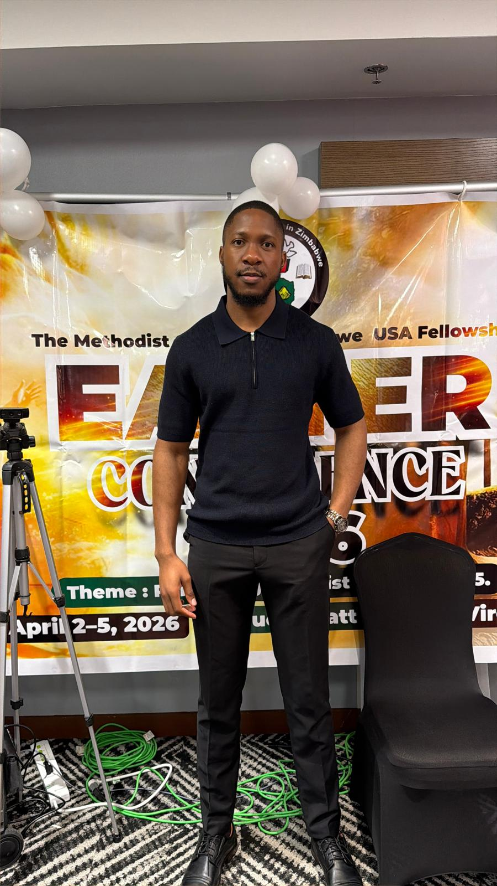

Meet the team behind AgriScore — three George Washington University graduates with backgrounds spanning data science, software engineering, and agricultural development across Zimbabwe and Sub-Saharan Africa..
The Team
Meet the team behind AgriScore — three George Washington University graduates with backgrounds spanning data science, software engineering, and agricultural development across Zimbabwe and Sub-Saharan Africa..

